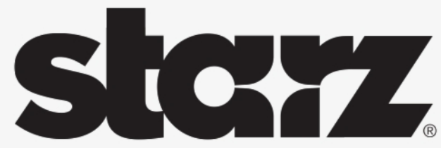

Starz (ProjectI), Denver, US
Position: Software Engineer
Period: November 2009 - March 2012
Location: Starz (ProjectI), Denver, US (remotely from Moscow, Russia)
Outsource company: Cyberhull
Project: ProjectI
Destination:
- Development of reliable, fluent and scalable cloud host system, general services and data\workflow processing;
- Migration of existed systems on new platform and development of new systems;
- Development of desktop client plugins.
Functions:
- Active participation to system software development;
- Unit and integration testing.
Technologies: C#, xUnit, WPF, WCF
Tools: MS VS 2008-2010, MS SQL Server 2003
Achievements:
- Developed internal cloud platform systems for automatic video processing and video product creation systems.
- Provided test coverage of unit tests at the level of 70%.
- Integrated MS Word plugin that allows you to save intermediate versions of a file in the system.
- When the decision was made to transfer internal systems to this platform, I planned and carried out the merging of the source codes of 8 code bases, each of which was created within 2 to 8 years, into a single code source.
- Was engaged in the development of UI plugins for control and operation management systems. Thanks to the component library I developed, I managed to speed up the development time for new UI plugins by 2 to 3 times.